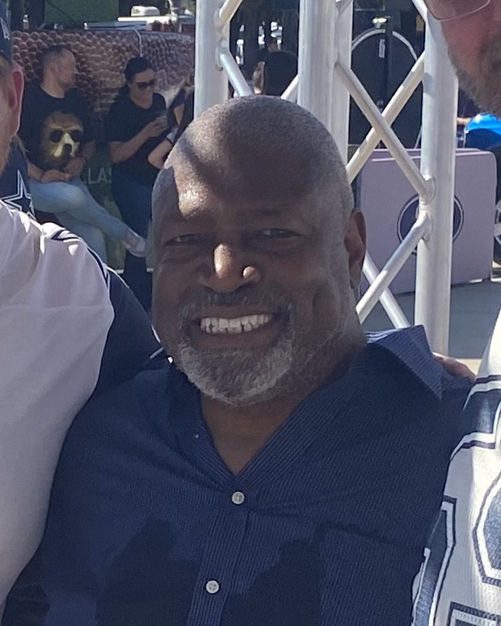

Charles Haley
The meanest pass rusher who ever wore red and gold, the first man with five rings, and two of them came here first.
The Charles Haley Story
Charles Lewis Haley was born on January 6, 1964, in Gladys, Virginia. He played linebacker and tight end at William Campbell High School in Naruna, was the defensive player of the year as a senior, and still nobody big came calling. James Madison was the only Division I school that offered him a scholarship.
He made them look smart. Haley started as a freshman and left JMU a two time Division I AA All American with 506 tackles, a school record. He's in the College Football Hall of Fame now, which is pretty good for the kid nobody recruited.
The 49ers took him in the fourth round of the 1986 draft, 96th overall. Teams had passed because he was timed at 4.8 in the forty. A 49ers scout clocked him at 4.55. The 49ers played him at outside linebacker in the 3 4, and as a rookie he had 12 sacks and made the NFL All Rookie team.
In 1987 he was a designated pass rusher, coming in on passing downs. In 1988 he became the starter at left outside linebacker, piled up 11.5 sacks and went to his first Pro Bowl. In Super Bowl XXIII against Cincinnati he had six tackles and two sacks, and the 49ers won 20 to 16 on the John Taylor drive.
He had 10.5 sacks in 1989 and got his second ring when the 49ers crushed Denver 55 to 10 in Super Bowl XXIV. Then came 1990: 16 sacks, the most in the NFC, consensus All Pro, and the UPI NFC Defensive Player of the Year. He led the 49ers in sacks in every one of his first six seasons.
It was also never easy. Haley clashed with teammates and coaches, and when the team left his best friend Ronnie Lott unprotected in Plan B free agency in 1991, he blamed George Seifert and couldn't let it go. On August 26, 1992, the 49ers traded him to Dallas for a 1993 second round pick and a 1994 third round pick.
In Dallas he moved to right defensive end in a 4 3 and won three more Super Bowls in four years, XXVII, XXVIII and XXX, becoming the first player ever with five rings. He was NFC Defensive Player of the Year again in 1994 and an All Pro again. Back trouble finally took him down in 1996, and he retired after surgery.
Then on January 2, 1999, after almost two years away, the 49ers brought him home to give an injured defensive line some depth for the playoffs. He stayed for the 1999 season, added three sacks, and walked away for good with 100.5 sacks in 169 games.
After football Haley was diagnosed with bipolar disorder. He went into therapy, started taking his medication, and started talking about it out loud. He coached on the Detroit Lions defensive staff in 2001 and 2002, and later became a special advisor mentoring rookies for both the 49ers and the Cowboys.
He was elected to the Pro Football Hall of Fame in 2015, the same year the 49ers put him in their own Hall of Fame. Eddie DeBartolo introduced him in Canton on August 8, 2015, and Haley spent a big part of his speech on mental illness, telling the crowd he takes his medicine every day and wants other people to do the same.
What He Meant to Us
If you were a kid in the Bay Area in the late 80s, Charles Haley was the guy you were a little scared of, and he was on your team. Montana and Rice got the posters. Haley got the quarterback.
People forget how good he was here before Dallas. Twelve sacks as a rookie. Sixteen in 1990. Two rings in red and gold before anybody in Texas had heard of him. He led the 49ers in sacks six years in a row, and he was doing it from linebacker.
And yeah, the trade still stings. He went to Dallas and won three more rings in four years. I'll never love that part. But I give the 49ers credit for bringing him back in 1999, and I give Haley a whole lot of credit for what he did after football, standing up in Canton and talking about bipolar disorder like it was nothing to be ashamed of. Because it isn't.
Five rings. Two of them ours. He belongs in this hall as much as anybody.
Why He Was Clutch
Haley's big games came in January. He started at left outside linebacker in the NFC Championship Game three years running, 1988, 1989 and 1990, and the 49ers won two Super Bowls in that stretch.
In Super Bowl XXIII, the closest one of the dynasty, he had six tackles and two sacks against Boomer Esiason's Bengals. Every one of those mattered in a 20 to 16 game.
In the 1990 divisional playoff against Washington, he got a hand on a Mark Rypien pass late in the game, and it went straight to Michael Carter, who ran it 61 yards for the touchdown that put away a 28 to 10 win.
He's tied for the most career sacks in Super Bowl history with 4.5, and he started in all five Super Bowls he won.
Clutch Moments
- 1986 season
Twelve sacks as a rookie
Drafted in the fourth round, Haley came in as an outside linebacker in the 3 4 and finished with 12 sacks, second among all rookies, earning a spot on the NFL All Rookie team.
- October 24, 1988
Three sacks on Monday night in Chicago
At Soldier Field, Haley sacked the Bears three times and shared a safety on Jim McMahon with Larry Roberts. The 49ers lost 10 to 9.
- January 22, 1989
Super Bowl XXIII
Haley had six tackles and two sacks in Miami, and the 49ers beat Cincinnati 20 to 16 when Montana hit John Taylor for the go ahead touchdown with 34 seconds left. Ring number one.
- January 28, 1990
Super Bowl XXIV
After a 10.5 sack season, Haley and the defense held Denver to 10 points in a 55 to 10 blowout in New Orleans. Ring number two.
- 1990 season
Sixteen sacks
Haley's best year in red and gold: 16 sacks, the most in the NFC, consensus All Pro and UPI NFC Defensive Player of the Year.
- January 12, 1991
The tip to Michael Carter
In the divisional playoff at Candlestick, Haley deflected a Mark Rypien pass into the arms of defensive tackle Michael Carter, who rumbled 61 yards for a touchdown to finish off Washington 28 to 10.
- January 2, 1999
Coming home
Almost two years after his last game, the 49ers signed Haley to help a banged up defensive line in the playoffs. He stayed for one more season in 1999 and got three more sacks.
- August 8, 2015
Canton
Introduced by Eddie DeBartolo, Haley was enshrined in the Pro Football Hall of Fame and used his speech to talk openly about living with bipolar disorder.
The Highlights
What They Said About Haley
“First of all, he was one of the smartest players to play the game of football, and one of the guys who wanted to be great every time he stepped on the field,”
“I take my medicine every day and I try to inspire others to do the same,”
“The only way that you can grow is that you've got to ask for help.”
“I realize at this stage of my life that it's better to mend fences than to burn them down.”
“I think his great legacy, besides being a Hall of Fame and great, great football player, is what he's going to do with the rest of his life in helping kids,”
“That's the key to everything: Are you willing to sacrifice to achieve your goal? What are you willing to sacrifice?”
Career Stats
| Year | Team | G | Sck | Sfty | Int | IntYds | FR | FRTD |
|---|---|---|---|---|---|---|---|---|
| 1986 | SF | 16 | 12.0 | 0 | 1 | 8 | 2 | 0 |
| 1987 | SF | 12 | 6.5 | 0 | 0 | 0 | 0 | 0 |
| 1988 | SF | 16 | 11.5 | 1 | 0 | 0 | 2 | 0 |
| 1989 | SF | 16 | 10.5 | 0 | 0 | 0 | 1 | 1 |
| 1990 | SF | 16 | 16.0 | 0 | 0 | 0 | 1 | 0 |
| 1991 | SF | 14 | 7.0 | 0 | 0 | 0 | 1 | 0 |
| 1992 | DAL | 15 | 6.0 | 0 | 0 | 0 | 0 | 0 |
| 1993 | DAL | 14 | 4.0 | 0 | 0 | 0 | 1 | 0 |
| 1994 | DAL | 16 | 12.5 | 0 | 1 | 1 | 0 | 0 |
| 1995 | DAL | 13 | 10.5 | 0 | 0 | 0 | 0 | 0 |
| 1996 | DAL | 5 | 1.0 | 0 | 0 | 0 | 0 | 0 |
| 1999 | SF | 16 | 3.0 | 0 | 0 | 0 | 0 | 0 |
| Career | 169 | 100.5 | 1 | 2 | 9 | 8 | 1 |
Tackles were not an official NFL stat in his era, so they're left out. He was signed for the 1998 playoffs only and played no 1998 regular season games. Led the NFC with 16 sacks in 1990. Scroll the table sideways on a phone.
Charles Haley: Fast Facts
What years was Charles Haley with the San Francisco 49ers?
Charles Haley was with the San Francisco 49ers over 2 stints (1986 to 1991 and 1998 to 1999), playing outside linebacker and defensive end.
What number did Charles Haley wear?
Charles Haley wore numbers 94, 95.
What are Charles Haley's signature numbers?
5 super Bowl rings, the first player ever to win five; 16 sacks in 1990, most in the NFC; 6 straight seasons leading the 49ers in sacks, 1986 to 1991; 100.5 career sacks.
What were Charles Haley's biggest honors?
Pro Football Hall of Fame (2015); 5x Super Bowl champion (XXIII, XXIV with the 49ers; XXVII, XXVIII, XXX with Dallas); 2x First Team All Pro (1990, 1994); 5x Pro Bowl (1988, 1990, 1991, 1994, 1995); 2x UPI NFC Defensive Player of the Year (1990, 1994).
What are some of Haley's biggest moments?
Twelve sacks as a rookie (1986 season); Three sacks on Monday night in Chicago (October 24, 1988); Super Bowl XXIII (January 22, 1989). Every one is in the Clutch Moments section above.